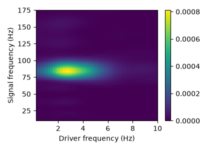
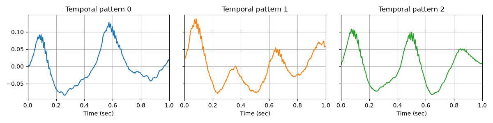

Note
Go to the end to download the full example code.
Extracting cross-frequency coupling waveforms from rodent LFP data#
This example illustrates how to learn univariate atoms on a univariate time-serie. The data is a single LFP channel recorded on a rodent’s striatum [1]. Interestingly in this time-serie, the high frequency oscillations around 80 Hz are modulated in amplitude by the low-frequency oscillation around 3 Hz, a phenomenon known as cross-frequency coupling (CFC).
The convolutional sparse coding (CSC) model is able to learn the prototypical waveforms of the signal, on which we can clearly see the CFC.
# Authors: Tom Dupre La Tour <tom.duprelatour@telecom-paristech.fr>
# Mainak Jas <mainak.jas@telecom-paristech.fr>
# Umut Simsekli <umut.simsekli@telecom-paristech.fr>
# Alexandre Gramfort <alexandre.gramfort@telecom-paristech.fr>
#
# License: BSD (3-clause)
Let us first load the data sample.
import mne
import numpy as np
import matplotlib.pyplot as plt
# sample frequency
sfreq = 350.
# We load the signal. It is an LFP channel recorded on a rodent's striatum.
data = np.load('../rodent_striatum.npy')
print(data.shape)
(1, 630000)
As the data contains severe artifacts between t=0 and t=100, we use a section not affected by artifacts.
Setting up high-pass filter at 1 Hz
FIR filter parameters
---------------------
Designing a one-pass, zero-phase, non-causal highpass filter:
- Windowed time-domain design (firwin) method
- Hamming window with 0.0194 passband ripple and 53 dB stopband attenuation
- Lower passband edge: 1.00
- Lower transition bandwidth: 1.00 Hz (-6 dB cutoff frequency: 0.50 Hz)
- Filter length: 1155 samples (3.300 s)
This sample contains CFC between 3 Hz and 80 Hz. This phenomenon can be described with a comodulogram, computed for instance with the pactools Python library.

[ ] 0% | 0.00 sec | comodulogram: DAR(10, 1)
[ ] 2% | 0.55 sec | comodulogram: DAR(10, 1)
[. ] 4% | 0.85 sec | comodulogram: DAR(10, 1)
[.. ] 6% | 1.15 sec | comodulogram: DAR(10, 1)
[... ] 8% | 1.45 sec | comodulogram: DAR(10, 1)
[.... ] 10% | 1.75 sec | comodulogram: DAR(10, 1)
[.... ] 12% | 2.06 sec | comodulogram: DAR(10, 1)
[..... ] 14% | 2.37 sec | comodulogram: DAR(10, 1)
[...... ] 16% | 2.67 sec | comodulogram: DAR(10, 1)
[....... ] 18% | 2.97 sec | comodulogram: DAR(10, 1)
[........ ] 20% | 3.27 sec | comodulogram: DAR(10, 1)
[........ ] 22% | 3.57 sec | comodulogram: DAR(10, 1)
[......... ] 24% | 3.87 sec | comodulogram: DAR(10, 1)
[.......... ] 26% | 4.17 sec | comodulogram: DAR(10, 1)
[........... ] 28% | 4.46 sec | comodulogram: DAR(10, 1)
[............ ] 30% | 4.77 sec | comodulogram: DAR(10, 1)
[............ ] 32% | 5.07 sec | comodulogram: DAR(10, 1)
[............. ] 34% | 5.38 sec | comodulogram: DAR(10, 1)
[.............. ] 36% | 5.67 sec | comodulogram: DAR(10, 1)
[............... ] 38% | 5.95 sec | comodulogram: DAR(10, 1)
[................ ] 40% | 6.26 sec | comodulogram: DAR(10, 1)
[................ ] 42% | 6.57 sec | comodulogram: DAR(10, 1)
[................. ] 44% | 6.85 sec | comodulogram: DAR(10, 1)
[.................. ] 46% | 7.15 sec | comodulogram: DAR(10, 1)
[................... ] 48% | 7.45 sec | comodulogram: DAR(10, 1)
[.................... ] 50% | 7.73 sec | comodulogram: DAR(10, 1)
[.................... ] 52% | 8.00 sec | comodulogram: DAR(10, 1)
[..................... ] 54% | 8.28 sec | comodulogram: DAR(10, 1)
[...................... ] 56% | 8.57 sec | comodulogram: DAR(10, 1)
[....................... ] 58% | 8.85 sec | comodulogram: DAR(10, 1)
[........................ ] 60% | 9.13 sec | comodulogram: DAR(10, 1)
[........................ ] 62% | 9.40 sec | comodulogram: DAR(10, 1)
[......................... ] 64% | 9.68 sec | comodulogram: DAR(10, 1)
[.......................... ] 66% | 9.96 sec | comodulogram: DAR(10, 1)
[........................... ] 68% | 10.24 sec | comodulogram: DAR(10, 1)
[............................ ] 70% | 10.52 sec | comodulogram: DAR(10, 1)
[............................ ] 72% | 10.80 sec | comodulogram: DAR(10, 1)
[............................. ] 74% | 11.09 sec | comodulogram: DAR(10, 1)
[.............................. ] 76% | 11.37 sec | comodulogram: DAR(10, 1)
[............................... ] 78% | 11.64 sec | comodulogram: DAR(10, 1)
[................................ ] 80% | 11.92 sec | comodulogram: DAR(10, 1)
[................................ ] 82% | 12.20 sec | comodulogram: DAR(10, 1)
[................................. ] 84% | 12.47 sec | comodulogram: DAR(10, 1)
[.................................. ] 86% | 12.75 sec | comodulogram: DAR(10, 1)
[................................... ] 88% | 13.03 sec | comodulogram: DAR(10, 1)
[.................................... ] 90% | 13.31 sec | comodulogram: DAR(10, 1)
[.................................... ] 92% | 13.58 sec | comodulogram: DAR(10, 1)
[..................................... ] 94% | 13.86 sec | comodulogram: DAR(10, 1)
[...................................... ] 96% | 14.13 sec | comodulogram: DAR(10, 1)
[....................................... ] 98% | 14.41 sec | comodulogram: DAR(10, 1)
[........................................] 100% | 14.70 sec | comodulogram: DAR(10, 1)
[........................................] 100% | 14.70 sec | comodulogram: DAR(10, 1)
We fit a CSC model on the data.
V_0/10 .........
Plot the temporal patterns. Interestingly, we obtain prototypical waveforms of the signal on which we can clearly see the CFC.
n_atoms, n_times_atom = d_hat.shape
n_columns = min(6, n_atoms)
n_rows = int(np.ceil(n_atoms // n_columns))
figsize = (4 * n_columns, 3 * n_rows)
fig, axes = plt.subplots(n_rows, n_columns, figsize=figsize, sharey=True)
axes = axes.ravel()
for kk in range(n_atoms):
ax = axes[kk]
time = np.arange(n_times_atom) / sfreq
ax.plot(time, d_hat[kk], color='C%d' % kk)
ax.set_xlim(0, n_times_atom / sfreq)
ax.set(xlabel='Time (sec)', title="Temporal pattern %d" % kk)
ax.grid(True)
fig.tight_layout()
plt.show()

Total running time of the script: (3 minutes 34.114 seconds)